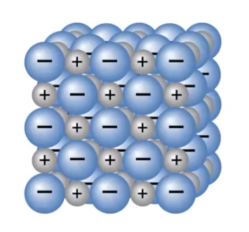
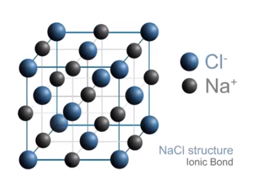
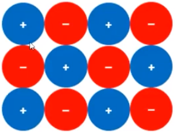
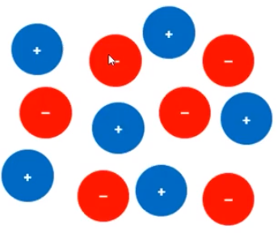

Ionic compound
{width="2.4583333333333335in" height="2.2916666666666665in"}
{width="3.0in" height="2.3020833333333335in"}
Note that:
Size is represented (Cl is larger, Na is smaller)
These are not individual molecules
Charges are shown and alternating
<!-- -->
Ionic compounds and conductance
A substance must have charged particles that are free to move in order to conduct electricity
A solid ionic compound will therefore not conduct electricity
{width="2.0729166666666665in" height="1.5416666666666667in"}
However, a molten ionic compound will conduct electricity
{width="2.3854166666666665in" height="2.0in"}